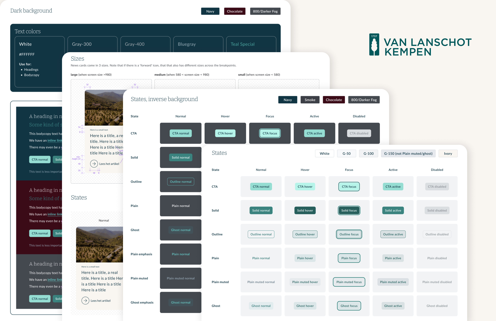

Case Study
VLK Design System
Challenge
The Challenge: Build a Design System closes the loop between design and code and scales across platforms.
Design Audit
I audited 629 tokens across three layers: Primitives, Semantic, and Component, checking for hardcoded values that bypassed the token system (207 cases), naming inconsistencies like spaces and commas in key names (132 issues), and primitives missing semantic references (24 gaps). For each issue, I documented a concrete fix. The goal was to make every problem explicit and actionable.
Token Naming Audit
629 tokens audited across three layers — Primitives, Semantic, and Component. Every issue is documented with a concrete rename fix.
With hypotheses formed from discovery phase, I found users hold little perceived value for the overview
because there is a disconnect between the information it presents and their actual tasks.
The survey was designed to validate exactly this: what users are trying to accomplish when they open the
dashboard,
and whether the existing features support those goals.
Rather than asking users to pick favourite features, the survey focused on usage frequency, task motivation,
and priority ranking,
to surface real workflows and mental models, not just feature preferences.

I made these sketch style components, designed a game for users to let them create their own dashboard. All of the components are the corrsponding ones from the design system. They can better understand the data points and functions they really want to add, therefore customize their own experience and learn how to make better use of the components that are available.


The users used FigJam to have the "final designs" (see design clips on the right).

Prototyping


Handoff
From fragmented to unified
Guest number details were removed and replaced with a high-level reminder card. Direct text guidance was added to navigation because users had no clear sense of where each link would take the. Finally, an AI suggestion layer was introduced to translate past client activity into recommended next steps, directly addressing the core finding that users saw little value in the overview because it showed datawithout direction.


Documentation

Takeaways
Invest in foundations, not surface fixes
Before touching the design, take time to build solid structural foundations. Information architecture, a scalable design system, and thorough Figma handoff documentation: these "invisible work" ultimately cut developer handover time significantly and kept the consistent across 100+ screens.
What I did well: Use AI tools to accelerate
Generating prototypes live in Figma Make during stakeholder interviews, and converting co-design sketches directly into wireframes. These two moves compressed the gap between "idea" and "validation" to nearly zero. The value of the tools wasn't in automating design decisions, but in making conversations more concrete.
What I can improve: Decisions need a single home
Product requirements were scattered across multiple tools, and tracing the reasoning behind any given decision was difficult without a single source of truth. Next time, I'd build a centralized decision log, documenting not just what was decided, but why. That serves continuity, and it serves whoever picks this up next.
More Work
Other Projects

Orbisk(Saas) Overview Dashboard
Delivered a fully redesigned dashboard that enhanced navigation clarity and improved client engagement and retention.
View project →Generative Public Website
Reimagining the Picnic grocery delivery experience — from checkout flow to personalisation.
View project →